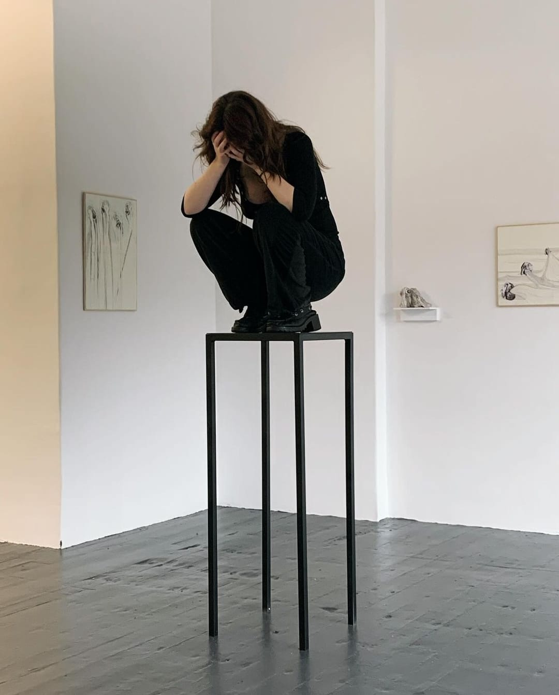
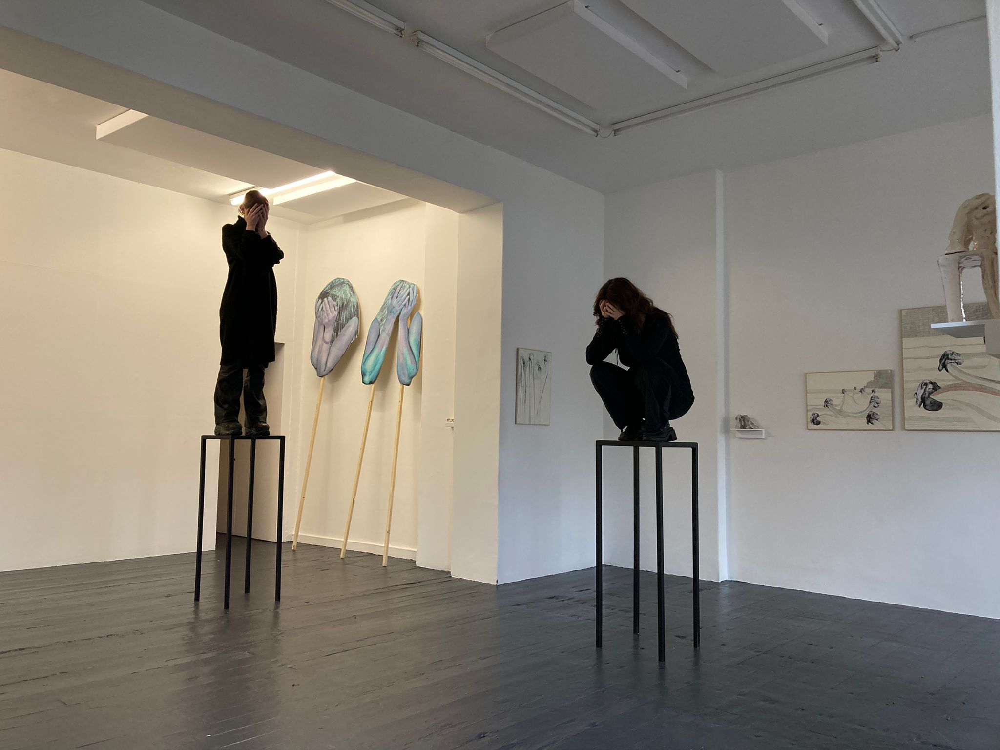
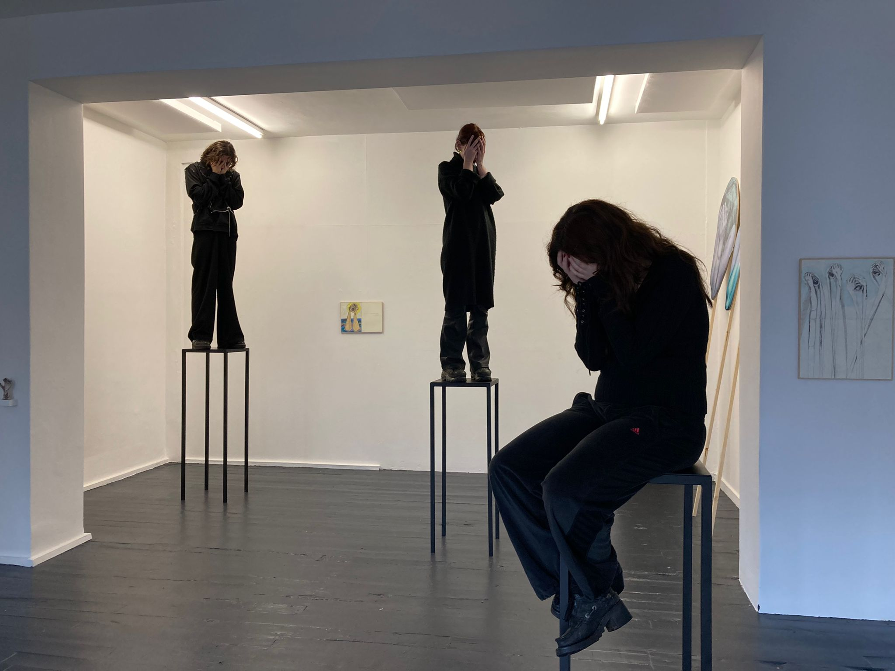
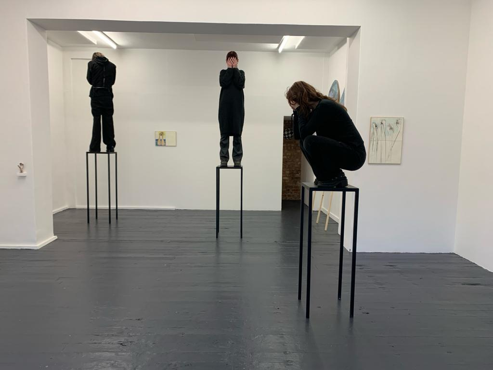
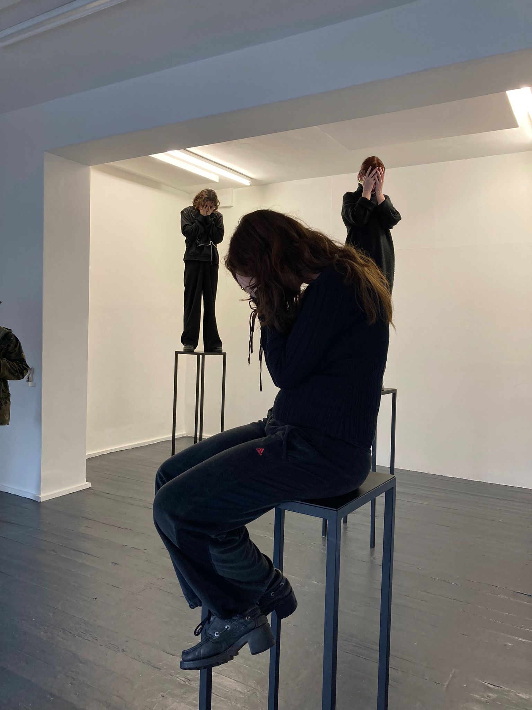
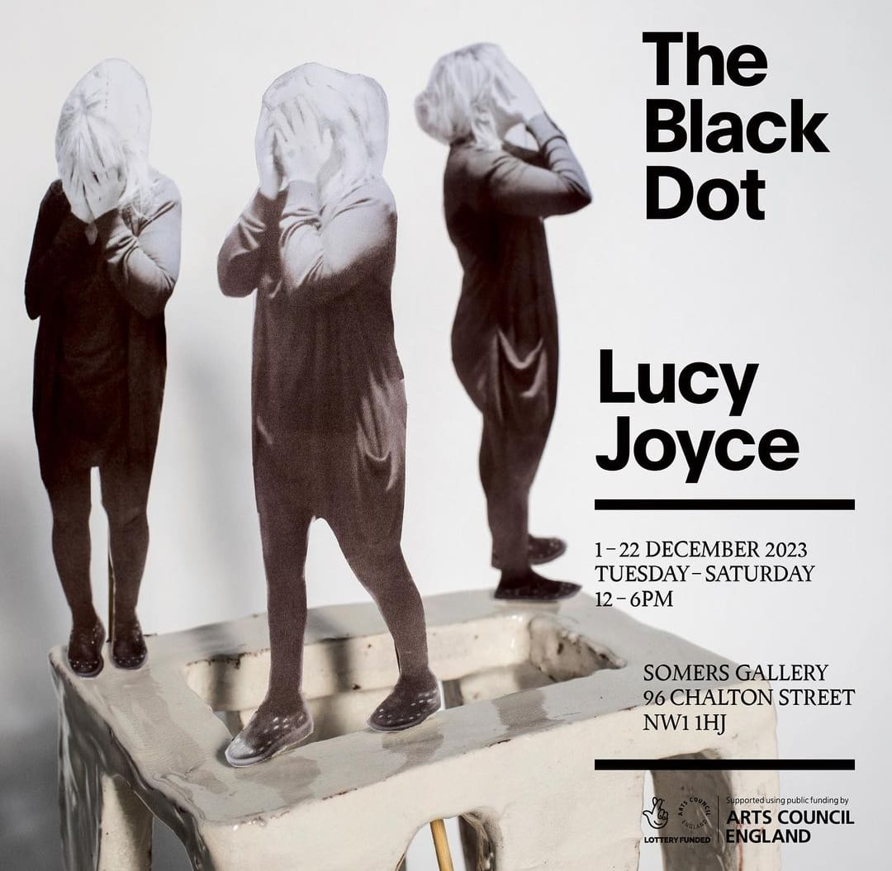

Lucy Joyce, The Black Dot – Performer, Somers Gallery
Myself, Rowan Parker-Renwick and Amy Sheldon performed in Systemic Failure for Lucy Joyce's exhibtion at Somers Gallery - The Black Dot.




